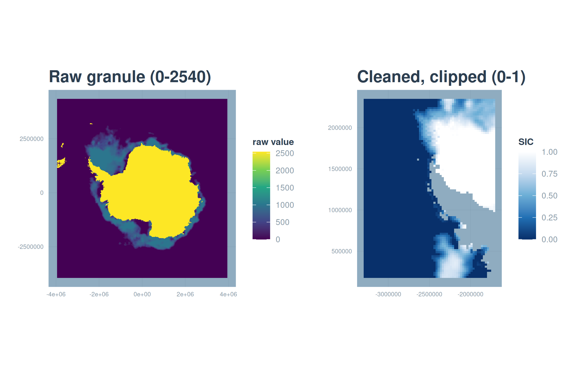

source(here::here("R", "setup.R"))
paths <- sih_paths()3 Ingestion: from native files to analysis-ready clips
The downloaded files are not yet usable for analysis. The AMSR granules are HDF-EOS5 containers holding many fields on two hemispheric grids, and the Sea Ice Index GeoTIFFs store concentration as integers from 0 to 1000 mixed with flag codes for land, coast, and missing data. This chapter turns both into clean daily rasters of sea-ice concentration on a 0 to 1 scale, with land and missing cells set to NA. The result is exactly the form the bundled sample is already in, so this is the step that produced data/sample/.
3.1 Reading the AMSR granule
Each AU_SI12 file is an HDF-EOS5 (.he5) granule. The southern-hemisphere daily sea-ice concentration lives in a single subdataset, SI_12km_SH_ICECON_DAY, on the NSIDC south polar stereographic 12.5 km grid. The code below is shown rather than run, because the raw granules are large and require an Earthdata download (Chapter 2); running it over your download produces the clips in data/sample/amsr_12km/.
# Discover the subdatasets in a granule (names vary slightly by GDAL build).
terra::describe("AMSR_U2_L3_SeaIce12km_B04_20130701.he5", sds = TRUE)
ingest_amsr <- function(he5_path, study_area, out_dir) {
# Read just the southern-hemisphere daily concentration grid.
sic <- terra::rast(he5_path, subds = "SI_12km_SH_ICECON_DAY")
# The AU_SI12 south grid is the NSIDC SSM/I polar stereographic projection
# (EPSG:3412). Assign it if the file does not carry it.
if (is.na(terra::crs(sic, describe = TRUE)$code)) terra::crs(sic) <- "EPSG:3412"
# Flag codes: 110 = missing, 120 = land. Everything else is 0-100 percent.
sic[sic == 110 | sic == 120] <- NA
sic <- sic / 100 # 0-100 percent -> 0-1 fraction
# Reproject onto the analysis grid (EPSG:3976) and clip to the study area.
sic <- terra::project(sic, sih_config$target_crs, method = "bilinear")
sic <- terra::crop(sic, study_area, mask = TRUE)
date <- regmatches(basename(he5_path), regexpr("[0-9]{8}", basename(he5_path)))
terra::writeRaster(sic, file.path(out_dir, paste0("AMSR_12km_", date, ".tif")),
overwrite = TRUE, datatype = "FLT4S")
}Two choices in that function are worth stating plainly. We reproject AMSR to EPSG:3976 so both products share one grid, and because AMSR is the fine reference we keep its 12.5 km resolution as the target everything else is matched to. We also clip to the study area on the way in, which is what keeps the per-file footprint to a few kilobytes.
3.2 Cleaning the Sea Ice Index
The Sea Ice Index GeoTIFFs we can work with directly, and the sample ships one raw granule so you can see the cleaning happen. Load it and look at the value coding.
raw_file <- list.files(file.path(paths$base, "raw_example"),
pattern = "\\.tif$", full.names = TRUE)[1]
raw <- terra::rast(raw_file)
terra::crs(raw, describe = TRUE)$code[1] "3976"range(terra::values(raw), na.rm = TRUE)[1] 0 2540The values run from 0 to 2540, which mixes real concentration with flags. The Sea Ice Index encodes sea-ice concentration as 0 to 1000 (tenths of a percent), and reserves four codes above that: 2510 for the pole hole, 2530 for the coastline, 2540 for land, and 2550 for missing data. Cleaning means turning every flag into NA, rescaling the genuine values to a 0 to 1 fraction, and clipping to the Peninsula.
study_area <- terra::vect(paths$study_area)
clean_sii <- function(r, study_area) {
r <- terra::clamp(r, upper = 1000, values = FALSE) # flags > 1000 -> NA
r <- r / 1000 # 0-1000 -> 0-1 fraction
terra::crop(r, study_area, mask = FALSE)
}
clean <- clean_sii(raw, study_area)
range(terra::values(clean), na.rm = TRUE)[1] 0 1Drawing the raw and cleaned granule side by side shows what changed. The raw panel is dominated by the land and missing flags that swamp the color scale; the cleaned panel is concentration alone, over the Peninsula.
library(patchwork)
p_raw <- ggplot(rast_to_df(raw, "v"), aes(x, y, fill = v)) +
geom_raster() + coord_equal() +
scale_fill_viridis_c(name = "raw value", na.value = NA) +
labs(title = "Raw granule (0-2540)", x = NULL, y = NULL) + theme_bri_map()
p_clean <- ggplot(rast_to_df(clean, "sic"), aes(x, y, fill = sic)) +
geom_raster() + scale_fill_sic() + coord_equal() +
labs(title = "Cleaned, clipped (0-1)", x = NULL, y = NULL) + theme_bri_map()
p_raw + p_clean
Applying clean_sii() to every daily granule, and the AMSR function to every .he5, produces the two directories of clean daily clips that the sample provides. From here on, both products are clean rasters of concentration on a 0 to 1 scale, and load_sic_stack() (introduced in Chapter 1) assembles a directory of them into a dated time series in one call.